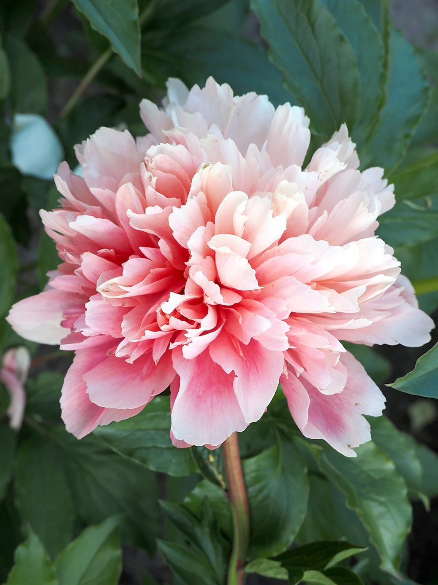
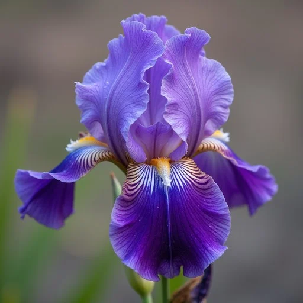
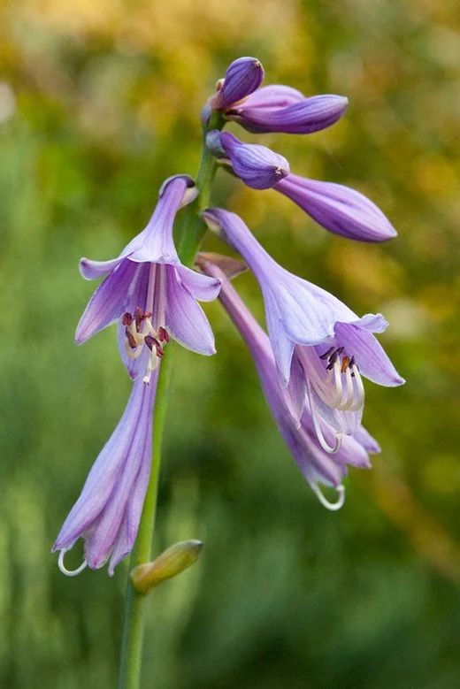

Півонія є однією з найкрасивіших багаторічних рослин. Вона має великі ароматні квіти різноманітних відтінків і може рости на одному місці багато років.
Півонії добре переносять зимові морози та не потребують складного догляду.
Повернутися до початку сторінки
Іриси відомі своїми яскравими квітами незвичайної форми. Вони прикрашають клумби навесні та на початку літа.
Рослина любить сонячні місця та помірний полив.
Повернутися до початку сторінки
Хоста цінується переважно за декоративне листя. Вона чудово росте в затінених місцях саду.
Існує багато сортів хости з різним забарвленням і розміром листків.
Повернутися до початку сторінки